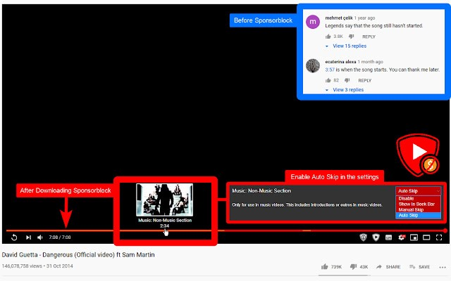
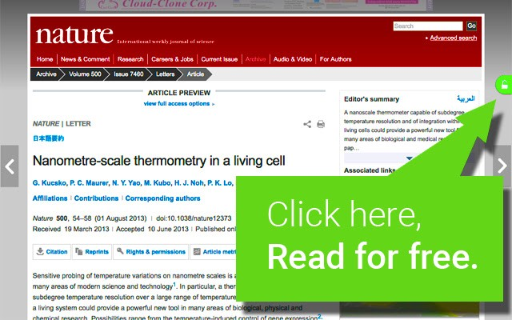
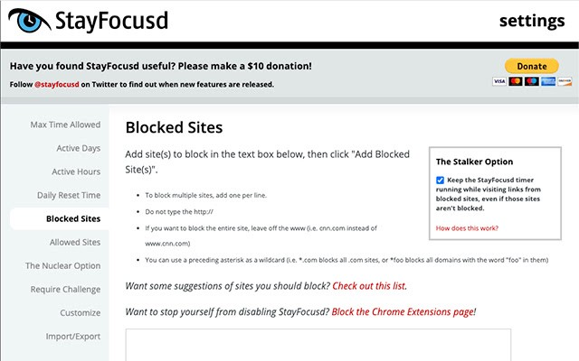
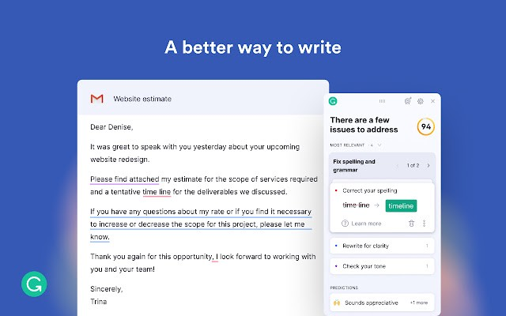
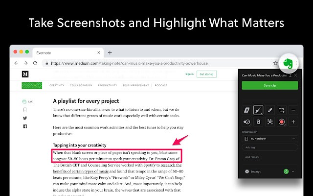
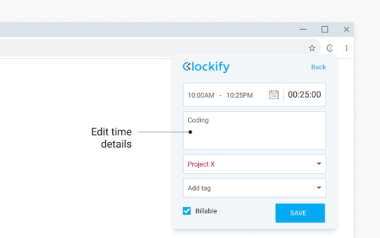

Hello guys, in this blog I have listed down 7 Powerful Chrome Extensions for Students that I find
very helpful.
So first of all let's explain to you a little what extensions are and how they work , so extensions are
basically built onweb technologies such as HTML, JavaScript, and CSS . They run in a separate,
sandboxed execution environment and interact with the Chrome browser. Extensions let you "extend" the
browser by using APIs to modify browser behavior and access web content.
Today, we can find thousands of extensions on the chrome web
store which are definitely categorized for ease of searching. The main categories that are available
are Runs Offline, By Google, Free, Available for Android, and also themed extensions.
Now that we know what Extensions are, let’s have a look at the 7 extensions listed below.
7 Powerful Extensions for Students
10 Aug, Number of Words - 1284, 6 min Read
|

|
Many times it happens that we are fully determined to study, but when we start to watch a youtube tutorial
then in the middle of the tutorial there is some sponsored part which is very annoying and disturbs our
entire focus of study. This extension is a solution for all students facing this problem. What this
extension does is that it lets you skip over sponsors, intros, outros, subscription reminders, and other
annoying parts of YouTube videos. It is a crowdsourced browser extension that lets anyone submit the start
and end times of sponsored segments and other segments of YouTube videos. Once a person submits this
information, everyone else with this extension will skip right over the sponsored segment.
Link-: https://chrome.google.com/webstore/detail/sponsorblock-for-youtube/mnjggcdmjocbbbhaepdhchncahnbgone?utm_source=chrome-ntp-icon
Link-: https://chrome.google.com/webstore/detail/sponsorblock-for-youtube/mnjggcdmjocbbbhaepdhchncahnbgone?utm_source=chrome-ntp-icon

2. Unpaywall:
Coming to our second extension, this extension might be also very useful for students as it happens often
with students that they open a website for getting a solution or maybe reading an article but it asks for a
subscription, so the solution to this problem is right over here.
Unpaywall gets the full text of scholarly articles as you browse. When you view a research article, it
automatically looks for a copy in its index of 20 million free, legal full-text PDFs. If they find one, then
all we need to do is click the green tab to read the article and that’s it. Hence this extension might be
useful for you too.
Link-: https://chrome.google.com/webstore/detail/unpaywall/iplffkdpngmdjhlpjmppncnlhomiipha?utm_source=chrome-ntp-icon
Link-: https://chrome.google.com/webstore/detail/unpaywall/iplffkdpngmdjhlpjmppncnlhomiipha?utm_source=chrome-ntp-icon

3. StayFocusd:
StayFocusd increases your productivity by limiting the amount of time that you can spend on time-wasting
websites.
You sit down at the computer, and you swear you’ll be productive. Next thing you know, it’s twelve hours
later. You’ve checked your email, updated your Facebook status, blown through 200 posts or reels on
Instagram, looked up your favorite band on Wikipedia, cyber-stalked your ex, and lost a week’s pay playing
online poker. What you haven’t done is WORK.
StayFocusd is a productivity extension for Google Chrome that helps you stay focused on work by restricting the amount of time you can spend on time-wasting websites. Once your allotted time has been used up, the sites you have blocked will be inaccessible for the rest of the day.
It’s highly configurable, allowing you to block or allow entire sites, specific subdomains, specific paths, specific pages, even specific in-page content (videos, games, images, forms, etc). This is a very useful extension for students who get distracted easily.
Link-: https://chrome.google.com/webstore/detail/stayfocusd/laankejkbhbdhmipfmgcngdelahlfoji?utm_source=chrome-ntp-icon
StayFocusd is a productivity extension for Google Chrome that helps you stay focused on work by restricting the amount of time you can spend on time-wasting websites. Once your allotted time has been used up, the sites you have blocked will be inaccessible for the rest of the day.
It’s highly configurable, allowing you to block or allow entire sites, specific subdomains, specific paths, specific pages, even specific in-page content (videos, games, images, forms, etc). This is a very useful extension for students who get distracted easily.
Link-: https://chrome.google.com/webstore/detail/stayfocusd/laankejkbhbdhmipfmgcngdelahlfoji?utm_source=chrome-ntp-icon

4. Loom:
This is a very helpful extension as many times there is an issue of recording our screen with our video
attached so for this we need to install an entire application on our system, but not anymore, as this
extension allows you to record your screens and also your video if you wish to include it.
Loom allows you to record just your current tab or your entire screen, and choose whether you’d like to include a thumbnail video of your face on the webcam. Plus, you can share the videos instantly, and even choose whether the video needs a password to be seen.
The best part is that there’s no limit to how much you can record — and it’s 100% free!
Link-: https://chrome.google.com/webstore/detail/loom-for-chrome/liecbddmkiiihnedobmlmillhodjkdmb?utm_source=chrome-ntp-icon
Loom allows you to record just your current tab or your entire screen, and choose whether you’d like to include a thumbnail video of your face on the webcam. Plus, you can share the videos instantly, and even choose whether the video needs a password to be seen.
The best part is that there’s no limit to how much you can record — and it’s 100% free!
Link-: https://chrome.google.com/webstore/detail/loom-for-chrome/liecbddmkiiihnedobmlmillhodjkdmb?utm_source=chrome-ntp-icon
5. Grammarly:
Many of you would already have heard the name of this extension in the youtube ads and if you still aren’t
using this, you are really missing out on something very helpful as Grammarly checks the grammar and
spelling of everything you write online. Never again will you make a silly typo or grammar mistake in your
emails, Facebook comments, tweets, and so on. What’s more, it doesn’t just check spellings but offers
accurate, context-specific suggestions. The Chrome extension is free, but Grammarly also has some extra
premium features available for a monthly fee, but even the non-premium functions are already very helpful.
Link-: https://chrome.google.com/webstore/detail/grammarly-for-chrome/kbfnbcaeplbcioakkpcpgfkobkghlhen?utm_source=chrome-ntp-icon
Link-: https://chrome.google.com/webstore/detail/grammarly-for-chrome/kbfnbcaeplbcioakkpcpgfkobkghlhen?utm_source=chrome-ntp-icon

Many of the students these days must have found it difficult to keep and organize all their notes in one
place, well Evernote may be the solution to this as Evernote is hands-down the best way to collect and
organize resources and notes online. This incredible tool also syncs across all of your devices and even
lets you search images for text.
The Evernote Web Clipper Chrome extension lets users save web content to their Evernote notebooks in just a couple of clicks. You can also save full articles, reader-friendly versions, screenshots, and more. Plus, Evernote even lets you annotate screenshots within your browser before you save them to your account. Evernote is free, but also offers premium business features for a monthly fee. This extension could prove to be efficient for the students that want to keep all their notes in one place.
Link-: https://chrome.google.com/webstore/detail/evernote-web-clipper/pioclpoplcdbaefihamjohnefbikjilc?utm_source=chrome-ntp-icon
The Evernote Web Clipper Chrome extension lets users save web content to their Evernote notebooks in just a couple of clicks. You can also save full articles, reader-friendly versions, screenshots, and more. Plus, Evernote even lets you annotate screenshots within your browser before you save them to your account. Evernote is free, but also offers premium business features for a monthly fee. This extension could prove to be efficient for the students that want to keep all their notes in one place.
Link-: https://chrome.google.com/webstore/detail/evernote-web-clipper/pioclpoplcdbaefihamjohnefbikjilc?utm_source=chrome-ntp-icon

So coming to the end of our bucket of extensions we have Clockify. This extension is very useful for those
who really wish to keep a track of the time they spent on each activity as Clockify is the only 100% free
time management tool for teams and solo users. It allows you to track the time you spend on projects and
analyze your productivity. You can use Clockify on the web, desktop, and mobile — all your tracked data is
synced in real-time so you can seamlessly switch between devices. Clockify definitely deserves to be on the
list as it can help in improving productivity.
Link-: https://chrome.google.com/webstore/detail/clockify-time-tracker/pmjeegjhjdlccodhacdgbgfagbpmccpe?utm_source=chrome-ntp-icon
Link-: https://chrome.google.com/webstore/detail/clockify-time-tracker/pmjeegjhjdlccodhacdgbgfagbpmccpe?utm_source=chrome-ntp-icon

I hope I was able to make your life easier in some or another way by listing these extensions above and I
assure you that they are tried and tested.